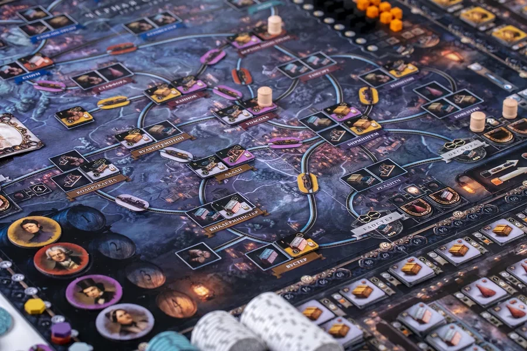

Um mig
Ég er alinn upp í Skagafirði og lýk flestöllu námi mínu á Akureyri, þar á meðal tölvunarfræði í Háskólanum á Akureyri. Eftir það vinn ég hér og þar í Reykjavík, oftast í starfi tengd hugbúnaðargerð og vinnu.
Ég er alinn upp í Skagafirði og lýk flestöllu námi mínu á Akureyri, þar á meðal tölvunarfræði í Háskólanum á Akureyri. Eftir það vinn ég hér og þar í Reykjavík, oftast í starfi tengd hugbúnaðargerð og vinnu.
Fyrir utan forritun þá dunda ég mér við ýmsa hluti

Mér finnst gaman að grípa í borðspil þegar færi gefst, enda eru nútímaborðspil mörg hver einkar vel hönnuð. Hef sérstaklega gaman af strategískum spilum eins og Brass: Birmingham og Blood Rage.

Svona inn á milli dunda ég mér við að setja saman og mála fígúrur úr borðspilum og herkænskuleikjum eins og Warhammer. Einkar góð leið til að slaka á og ná einbeitingu á núinu.

Mín helsta hreyfing er að synda og stunda ég það langoftast í Árbæjarlaug. Ég reyni að gera það nokkuð reglulega og syndi yfirleitt kílómeter í hvert skiptið.